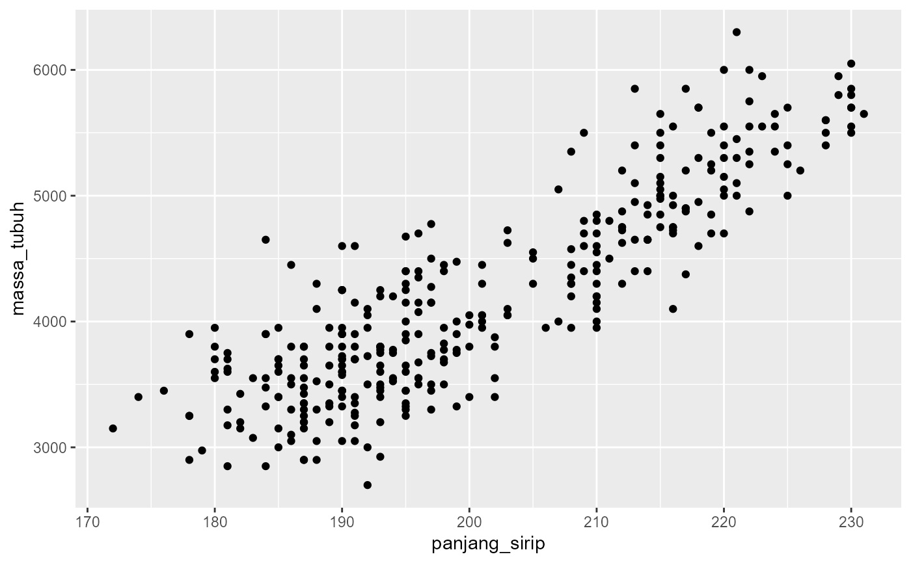

Data pengamatan 344 ekor penguin dari tiga spesies di Kepulauan Palmer, Antarktika. Data ini merupakan versi Bahasa Indonesia dari dataset `penguins` pada paket `datasets`, dengan nama variabel yang diterjemahkan untuk mendukung pembelajaran sains data menggunakan paket tidyversindonesia.
Format
Sebuah data frame dengan 344 observasi dan 8 variabel:
- spesies
Nama spesies penguin.
- pulau
Pulau tempat pengamatan dilakukan.
- panjang_paruh
Panjang paruh dalam milimeter (mm).
- tebal_paruh
Tebal paruh dalam milimeter (mm).
- panjang_sirip
Panjang sirip dalam milimeter (mm).
- massa_tubuh
Massa tubuh dalam gram (g).
- jenis_kelamin
Jenis kelamin penguin.
- tahun
Tahun pengamatan.
Examples
# Melihat enam baris pertama data
data_lihat_kepala(penguin)
#> spesies pulau panjang_paruh tebal_paruh panjang_sirip massa_tubuh
#> 1 Adelie Torgersen 39.1 18.7 181 3750
#> 2 Adelie Torgersen 39.5 17.4 186 3800
#> 3 Adelie Torgersen 40.3 18.0 195 3250
#> 4 Adelie Torgersen NA NA NA NA
#> 5 Adelie Torgersen 36.7 19.3 193 3450
#> 6 Adelie Torgersen 39.3 20.6 190 3650
#> jenis_kelamin tahun
#> 1 Jantan 2007
#> 2 Betina 2007
#> 3 Betina 2007
#> 4 <NA> 2007
#> 5 Betina 2007
#> 6 Jantan 2007
# Membuat grafik sebar (scatter plot)
visualisasi_ggplot(
penguin,
estetika(
x = panjang_sirip,
y = massa_tubuh
)
) +
grafik_geometrik_titik()
#> Warning: Removed 2 rows containing missing values or values outside the scale range
#> (`geom_point()`).
